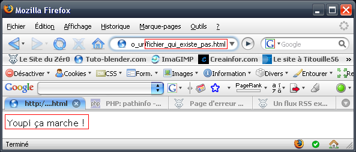

Dans ce tutoriel, je vais vous apprendre à simuler l'URL rewriting. Il y a déjà un tutoriel sur ce site qui traite de ce sujet (celui-ci) mais ici, je vais utiliser une technique un peu plus particulière qui utilise un fichier .htaccess et l'erreur 404. L'intérêt de cette technique est qu'elle peut marcher sur des serveurs qui n'autorisent pas l'URL rewriting classique.
Nous allons utiliser l'erreur 404 ! C'est l'erreur signifiant que le fichier auquel le visiteur a tenté d'accéder n'existe pas. ^^
Pour en savoir plus sur cette commande, il y a un tutoriel : page d'erreur perso.
Nous allons donc dire à Apache que, lorsqu'un fichier n'est pas trouvé, on redirige vers une page qui va décortiquer l'adresse demandée pour inclure le bon fichier.
Par exemple...
http://www.monsite.com/objet.php?obj=livre
... deviendra...
http://www.monsite.com/objet-livre.html
... ou encore...
http://www.monsite.com/objet/livre.html
La classe, non ? ;)
Allez, on commence par créer les fichiers dont on aura besoin avant de tester si ça peut marcher ou courir sur le serveur que vous utiliserez. :)
de tous vos fichiers (ici, je n'utiliserai qu'un fichier objet.php).
Le fichier index.php
Créez un fichier index.php dans lequel vous écrirez :
Youpi, ça marche !
Vous verrez ensuite pourquoi. ^^
Le fichier .htaccess
Créez maintenant un fichier .htaccess dans lequel vous mettrez ceci :
ErrorDocument 404 /index.php
Cela aura pour action, si un fichier n'est pas trouvé, de rediriger le visiteur vers le fichier index.php.
Testons...
Maintenant, allez sur une page qui n'existe pas sur votre site. Exemple :
http://www.monsite.com/page_qui_n_existe_pas.html
Si vous voyez écrit « Youpi ça marche ! » et que l'adresse dans la barre d'adresse de votre navigateur est toujours l'adresse du fichier qui n'existe pas, vous pouvez continuer à lire, sinon DEHORS ! Non, je rigole, vous pouvez rester mais bon, ça ne fonctionnera pas ! ^^
Exemple où tout est bon :

Allez hop, on passe à la réalisation du système. :)